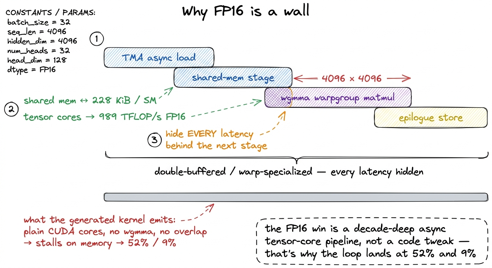
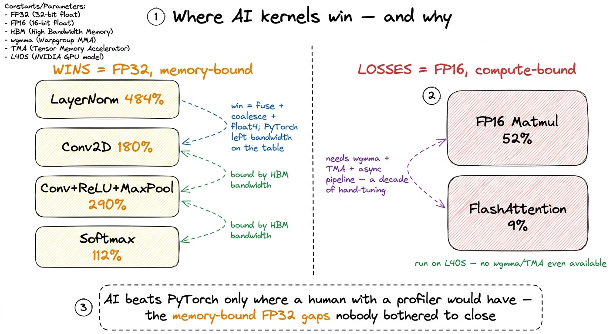

The CRFM experiments
Every other article on this site is a human climbing the GEMM ladder by hand. You form a hypothesis about what the hardware is wasting, you write the CUDA, you profile it, you read a bold percentage off the profiler, and you do it again. That loop is the job. And it is slow — a single rung on the GEMM ladder can eat an afternoon.
So here is the question this article answers, and it is one worth sitting with before we touch any numbers: can a language model run that loop by itself? Not "can a chatbot autocomplete a kernel" — anyone who has tried that knows it produces plausible-looking CUDA that either won't compile or runs at a tenth of the speed. The real question is whether the whole worklog — propose, implement, measure, keep the winner, repeat — can be handed to a machine.
In May 2025, Stanford's Center for Research on Foundation Models (CRFM) accidentally answered it. They were building a pipeline to generate synthetic training data — examples of good kernels to later train a model on. The kernels were supposed to be a means to an end. But somewhere in the pipeline, the generated kernels themselves started beating PyTorch's own production kernels. The blog post's title says it all: "Surprisingly Fast AI-Generated Kernels We Didn't Mean to Publish (Yet)."1 Source: "Surprisingly Fast AI-Generated Kernels We Didn't Mean to Publish (Yet)", Stanford CRFM, 2025-05-28. The "we didn't mean to" is doing honest work — this was a byproduct, not a polished product, which is exactly why I trust its negative results as much as its positive ones.
This is my worklog reading of that result. What did they actually do? Which numbers are real? And — the part every breathless summary skips — where does it fall flat on its face, and why? Because the where-it-fails is not a footnote. It is the whole lesson, and it maps cleanly onto everything else this course teaches.
Let me give you the two numbers that frame the entire piece, so you feel the tension early.
On LayerNorm, the generated kernel hit 484.4% of PyTorch — nearly five times faster than the code PyTorch ships. On FlashAttention, the same method, same models, same procedure, produced a kernel at 9% of PyTorch — more than eleven times slower. Both numbers are true. The gap between them is not noise. It is the most useful thing in the whole study, and by the end of this article you will be able to predict which side of that gap any given operator lands on, before running a single benchmark.
First, the thing everybody tries — and why it stalls
Before we can appreciate what CRFM did right, we have to feel what the obvious approach gets wrong. Because the obvious approach is what you or I would type first.
You have a reference operation — say, LayerNorm. You paste it into a frontier model and say: "here is the PyTorch op, write me a fast CUDA kernel for it." It writes one. You compile it. Maybe it errors; you paste the error back. Maybe it runs but it's slow; you paste the timing back and say "make it faster." The model edits. You measure again. Repeat.
This is a sequential revision chain — one kernel, revised over and over. And it works, for about three or four turns. Then it flatlines. I have watched this happen more times than I'd like to admit, and the failure mode is always the same and it is weirdly human: the model gets attached to its first structural decision.
Let me make that concrete, because it's the crux. Suppose the model's first kernel assigns one thread per output row. That was an arbitrary choice made in the first ten seconds. But now every subsequent "make it faster" turn treats that choice as fixed. It will unroll a loop, it will swap a float for a float4, it will shave a register — all within the one-thread-per-row world. If the actually-fast design needed one warp per row, or a completely different tiling, the revision chain will never find it. It is polishing a local minimum. It mutates characters when the problem needs it to mutate plans.
Here is the deeper reason, and it's worth saying plainly because it's the hinge of the whole method. The model is being asked to do two very different jobs in the same breath: decide what strategy to try, and write correct, fast CUDA for it. Those are different skills. Deciding "I should fuse the two passes so I read the tensor once" is a reasoning-about-mechanism task. Writing the pointer arithmetic that does it without a race condition is a careful-implementation task. When you smush them together into "make this faster," the model does neither well — it defaults to safe, local, syntactic tweaks because those are the ones least likely to break the code it already has.
 figure rendering · The obvious revision chain gets trapped polishing its first structural
figure rendering · The obvious revision chain gets trapped polishing its first structuralCRFM's whole contribution is to un-smush those two jobs. Split "decide what to try" from "write the CUDA," and turn the second into a wide parallel search. That's it. That's the idea. Everything else is machinery to make that idea run. Let's build it up one piece at a time.
Piece one: ideas in English, before any code
The first move is almost embarrassingly simple, and it's the one I'd bet does the most work.
Generate the optimization ideas in natural language first — before writing a single line of CUDA. And condition each new batch of ideas on the ideas already tried. So the prompt is not "here is a kernel, improve it." The prompt is closer to: "here are the strategies attempted so far and how fast each was — propose new strategies we haven't tried."
The model then produces English hypotheses. Things like:
- "Convert the convolution into an implicit GEMM so we can reuse the matmul tiling."
- "Fuse the
ReLUand the pooling into the epilogue so we never round-trip the intermediate tensor through HBM." - "Vectorize the global loads with
float4and make sure each warp's accesses are contiguous so they coalesce."
Stop and notice what just happened, because it's subtle and it's the point. Those three bullets are exactly the sentences a human kernel engineer says out loud at the whiteboard. They are reasoning about mechanism — about what the memory system and the ALUs are physically doing — not about syntax. By forcing the output into prose first, the search stops thrashing on brace placement and starts reasoning about the hardware. It is, quite literally, the three-regimes thought process — is this op memory-bound or compute-bound, and what's the bottleneck? — extracted into text.
CRFM even categorized the ideas the search produced, and the buckets are the kernel-engineering syllabus: memory access optimization, asynchronous operations and latency hiding, precision/data-type tricks, compute and instruction optimization, occupancy and parallelism, and control-flow/loop restructuring. The model wasn't inventing exotic new physics. It was rediscovering the standard playbook — and writing it down in English is what let it do so.
There's a mental model I want to plant here and reuse for the rest of the article, so hold onto it: think of this as evolution, not conversation. A revision chain is a conversation — one lineage, edited turn by turn. What we're building instead is a population of kernels that breed and get selected. The English idea is the mutation operator. And a good mutation operator is the difference between evolution that finds wings and evolution that just makes slightly bigger bacteria. Random bit-flips (character edits) rarely produce anything useful. A hypothesis about mechanism ("fuse the passes") is a mutation that jumps to a genuinely different, plausibly-better organism.
Piece two: branch wide, realize each idea many ways
Here is the move that turns a chatbot into a search algorithm.
Each English idea is realized into multiple independent implementations. Same plan — "fuse the epilogue" — written several different ways, as several separate kernels. Then every one of them is compiled, checked for correctness against the reference, and timed. All in parallel.
Why does writing the same idea several times help? This surprised me the first time, so let me reason through it. An idea like "vectorize the loads" is underdetermined — there are a dozen ways to actually thread it: how big the tiles are, how the work is split across warps, whether you use __ldg, where the loop boundaries fall. Any one realization might have a dumb bug that tanks it, or might just happen to pick tile sizes that don't fit the occupancy sweet spot. By generating several realizations of one idea and measuring them, you're not trusting the model to get the details right — you're letting the profiler pick the winner. The model proposes; the hardware disposes. That's the same humility the human worklog has: you never trust your prediction, you run ncu.
And correctness is not assumed — it's tested. Each candidate is run against the reference op on many random inputs, and the outputs must match numerically. The tolerance they used is 1e-2, which deliberately allows lower-precision solutions to pass.2 A 1e-2 tolerance is loose on purpose — it lets a kernel that computes in, say, TF32 or that reorders float additions still count as "correct." It's the right call for a search over performance, but it's worth knowing: "correct" here means "close enough on these random inputs," not "bit-exact." A production adoption would tighten this and re-test. A kernel that's fast but wrong is discarded, not celebrated. This is the guardrail that makes the whole thing trustworthy — the search cannot cheat by computing garbage quickly.
 figure rendering · Because one English idea can be coded many ways, you generate several,
figure rendering · Because one English idea can be coded many ways, you generate several,Piece three: keep the best seeds, and let ideas recombine
Now the loop closes into a real search procedure. After each round of "propose ideas → realize → correctness-check → time," you take the highest-performing kernels and use them to seed the next round. And you keep a maintained bank of known-good kernels on the side to seed from too.
Bad branches die. Good branches breed. This is textbook evolutionary search — with one glorious twist: the mutation operator is a frontier model with a hypothesis instead of a random bit-flip. That's why it can climb so much faster than a naive genetic algorithm. Random mutations to CUDA source are almost always fatal (a flipped index, a broken bracket). Mutations proposed as English mechanism-hypotheses are almost always at least coherent, even when they don't help.3 They ran the search with two off-the-shelf frontier models — OpenAI's o3 and Google's Gemini 2.5 Pro — used both as the idea-generator and the code-writer. No fine-tuning. These are the same models you can call from an API today, wired into a search loop. That's part of what makes the result feel close-to-home rather than a lab curiosity.
They ran five rounds of this. And here's the detail I find most telling, the one that proves the branching is load-bearing and not decorative: most of the winning kernels did not show up early. The majority emerged in round 4 or 5.
Why does that matter so much? Because if the best kernels appeared in round 1, you wouldn't need the machinery — a single clever prompt would do. The fact that the winners arrive late means they are compositions of earlier survivors. Good idea A from round 2 gets recombined with good idea B from round 3 to produce great kernel C in round 5. You only reach C by keeping a diverse population alive long enough to recombine it. A revision chain, which carries exactly one lineage forward, can never do this — it threw away all the other branches on turn two.
The cleanest example of recombination in their runs is beautiful. In a later Conv2D round, the search seeded itself with a GEMM kernel it had generated earlier — because the English idea "a convolution is an implicit matrix multiply" had surfaced in the idea stage. The matmul work it had already done became raw material for the convolution. That is cross-pollination between operators, and it is exactly what the seed bank exists to enable. No single prompt gives you that; only a population that remembers its past winners does.
 figure rendering · The best kernels emerge in rounds 4–5 because they recombine earlier s
figure rendering · The best kernels emerge in rounds 4–5 because they recombine earlier sSo the full loop, in one breath: propose ideas in English → realize each many ways → compile, correctness-check, and time all of them in parallel → keep the fastest as seeds → recombine over five rounds. That's the machine. Now let's see what it produced.
The setup, so the numbers mean something
Before the results, two facts about the harness that a lot of summaries drop — and both matter for reading the numbers honestly.
First, the benchmark. They evaluated on ten operators drawn from KernelBench level 1 — the level that covers single, foundational operators (a matmul, a softmax, a norm), as opposed to whole fused blocks or full models. They used modified problem sizes rather than the stock ones. For each op, the metric is throughput as a percentage of PyTorch's own kernel on the same hardware, computed as reference-time ÷ generated-time. So above 100% means faster than PyTorch, and 484% means PyTorch takes 4.84× as long as the generated kernel. Simple, and it's the metric a practitioner actually cares about: did you beat the thing that ships?
Second — and this one genuinely changes how you should read the wins — the hardware was an NVIDIA L40S. Not an H100. This is easy to miss and it is central, so we'll come back to it hard in a moment. Keep it in your pocket.4 The L40S is an Ada-generation (sm_89) data-center card built around graphics/inference workloads. Crucially it has no Hopper-class wgmma warpgroup-matmul or TMA async-copy engine — the exact machinery the beating-cuBLAS ladder relies on. So the "compute-bound" opponent here isn't even fielding its best team, which makes the FP16 losses below more damning, not less.
The numbers that are real
Here's where the search genuinely wins. These are the numbers worth quoting.
LayerNorm(16×64×256×256): 484.4% of PyTorch — the headliner, nearly 5× faster.Conv2D(on the modified size): 179.9% — 1.8× faster.Softmax(4096×65536): 111.8% — a modest but real 12% win.- Fused
Conv2D + ReLU + MaxPool: 290.1% against the naive reference — and still 189.0% againsttorch.compile, i.e. it beat PyTorch even when PyTorch was allowed to fuse too. - FP32
Matmul(4096×4096): 101.3% — essentially matchingcuBLAS-backed PyTorch, which for generated matmul code is a serious result on its own.
Let's take LayerNorm seriously, because 484% sounds fake and I want you to see exactly why it isn't. The kernel is not doing 5× less arithmetic — the FLOPs of a LayerNorm are fixed by the definition. It is winning entirely on memory.
Reason through what LayerNorm actually does. It's a textbook memory-bound operation: read the input tensor to compute the mean, read it again (or hold it) to compute the variance, then read/normalize/write to produce the output. Its arithmetic intensity is tiny — a handful of FLOPs per byte moved. When a kernel is memory-bound, its runtime is set by bytes moved ÷ HBM bandwidth, full stop. So there is exactly one way to make it faster: move fewer bytes, or move them more efficiently.
Napkin math to make it real. Take a tensor of N elements in FP32. The naive multi-pass approach might read it three times and write once — call it 4 passes × 4 bytes × N. Fuse those passes so you read the input once, keep the running mean and variance in registers, and write once, and you're at roughly 2 passes × 4 × N. That alone is a ~2× reduction in traffic — and on a memory-bound op, traffic is time. Add float4 vectorized loads so each memory transaction pulls 16 bytes instead of 4, and clean coalescing so all 32 threads in a warp hit one contiguous cache line, and you've squeezed the remaining bandwidth out. Stack those and a ~5× total is entirely plausible. None of it is magic. It is the memory-bound regime's greatest-hits playbook — fuse, keep stats in registers, vectorize, coalesce — executed by a machine that could try a hundred variants overnight and keep the fastest.
 figure rendering · The whole 484% is a memory story: the fused kernel moves the tensor fa
figure rendering · The whole 484% is a memory story: the fused kernel moves the tensor faThe fused Conv+ReLU+MaxPool win is the same story wearing a different hat. The entire gain is not round-tripping the intermediate tensors through HBM between the three ops. PyTorch's naive path materializes the conv output in HBM, reads it back to apply ReLU, writes it, reads it again to pool, writes again. Fuse all three into one kernel and the intermediates never leave the chip — they live in registers and shared memory and get consumed on the spot. That's precisely the argument in operator fusion, and beating torch.compile by 189% means the generated epilogue fusion was tighter than the compiler's own — a legitimately impressive result for a model nobody fine-tuned for this.
Notice the pattern across every win: FP32, and memory-bound. Hold that thought, because the losses are about to complete the sentence.
The numbers that are humbling
Here's the part the headline buries. Two operators went badly — not "could be better," but you-would-never-ship-this badly:
- FP16
Matmul: 52% of PyTorch — roughly half speed. - FP16
FlashAttention: 9% of PyTorch — more than 11× slower.
These are not rounding errors or unlucky seeds. Same method, same five rounds, same frontier models, same careful correctness checks — producing kernels a serving team would laugh out of the room. And the reason those two failed while LayerNorm soared is the single most important idea in the whole study. Let's earn it.
Why it wins exactly where it wins
CRFM's own explanation is refreshingly blunt, and it's the key that unlocks everything: "FP32 is less common in modern ML workloads and often less optimized on recent hardware compared to FP16 or BF16."
Read that again with the results in mind and the whole picture snaps into focus. Every win was FP32 and memory-bound. Every loss was FP16 and compute-bound. That is not a coincidence — it's the mechanism.
Here's the reasoning. Modern ML runs in FP16/BF16, because that's what the tensor cores eat and where all the throughput lives. So that's where NVIDIA and the PyTorch team have poured fifteen years of hand-tuning. The FP16 matmul and attention paths are polished to a mirror finish. FP32, by contrast, is the backwater — fewer people run production FP32, so its kernels are comparatively neglected, and PyTorch leaves real bandwidth on the table there. So the search found gaps in FP32 because those gaps were still open. Nobody had bothered to close them, precisely because almost nobody's hot path is FP32.
Now flip to the losses and ask the honest question: what does a fast FP16 matmul actually require? Think about the machinery. On a Hopper H100 the fast path means feeding the tensor cores through wgmma warpgroup-matmul instructions, staging tiles through up to 228 KiB of shared memory per SM, saturating 989 TFLOP/s of BF16/FP16 tensor throughput, and — the hard part — hiding every latency behind a software pipeline: async TMA copies, double-buffering, warp specialization. That is the exact stack the beating-cuBLAS ladder climbs from 1.3% to 93.7% of cuBLAS, one profiled step at a time, over many kernels.5 And remember — CRFM ran on an L40S, which doesn't even have wgmma or TMA. So the FP16 matmul opponent there is PyTorch's already-excellent Ada tensor-core path. The generated kernels mostly can't reach the tensor cores at all, let alone pipeline them — which is why they bottom out near 52% and 9% even against a non-Hopper baseline. On an H100 the gap would be worse.
A model emitting CUDA source has effectively zero chance of rediscovering that stack in five rounds. It has seen almost no correct examples of wgmma+TMA warp-specialized pipelines in its training data — that code is rare, sm_90a-specific, and brutally unforgiving. So it emits a flat, un-pipelined kernel that runs on the plain CUDA cores with no overlap and stalls waiting on memory the whole time. Half speed on matmul. A tenth on attention. The search made real progress — it's genuinely climbing — it just started at the bottom of a cliff that took human experts a decade to scale.

figure rendering · The compute-bound losses in one picture: production FP16 is an overlapFlashAttention is the extreme case, and it deserves its own paragraph. It is a fused, IO-aware, online-softmax algorithm whose entire reason for existing is to never materialize the attention matrix in HBM — it tiles the computation and keeps a running softmax so the full N×N scores never touch global memory. It is arguably the most heavily hand-optimized single kernel in all of deep learning; the FlashAttention papers are a multi-year saga of squeezing the hardware. Landing at 9% means the search rebuilt something functional but hopelessly naive.
And yet — credit where due — CRFM notes the search lifted FlashAttention from under 1% at KernelBench's release up to that 9%, spending roughly 3 million input tokens and 4 million output tokens to do it.6 So the honest framing is "we took FlashAttention from <1% to 9%," a ~9× improvement — not "9% is good." A 9× gain over a catastrophic baseline that is still 11× slower than production is simultaneously a real result and completely unshippable. Both things are true, and holding both is the whole skill of reading this study. That's the tell: the loop is real, it makes real progress, and it is still an order of magnitude away from something you could put in a serving path.
So the rule that falls out is clean, and it rhymes with every other article on this site: the AI wins exactly where a competent human with a profiler would have won — and only against opponents who weren't already trying. It closes the easy, memory-bound, FP32 gaps that PyTorch left open because nobody's hot path needed them closed. It cannot invent the wgmma pipeline a compute-bound FP16 kernel demands, because that gap was already closed, at great cost, by people who spent years on it.

figure rendering · The whole result on one card: the wins (orange) are unclaimed memory-bA quick sanity check: does this contradict the rest of the site?
It's worth pausing to ask, because a beginner might reasonably worry: "if an LLM can beat PyTorch, why am I learning to write kernels by hand?" Let's answer it head-on with the mental model we built.
It doesn't contradict anything — it confirms the site's spine. This whole course is organized around one distinction: memory-bound vs compute-bound. The CRFM result is that distinction, validated by a machine. The search automates the memory-bound half — fusion, coalescing, vectorization, reducing HBM traffic — because that half is a finite, well-understood playbook and the model has seen thousands of examples of it. The search collapses on the compute-bound half — tensor-core pipelines — because that half is a deep, hardware-specific, sparsely-documented craft.
Which is exactly why this course spends the bulk of its kernels — the whole GEMM ladder, the tensor-core series, Hopper's wgmma and warp specialization, TMA — on the compute-bound side. That's the part a search can't hand you yet. The syllabus and the study agree on where the hard part is.
What I actually take from this
Two takeaways, and they pull in opposite directions — which is why the honest reading is neither hype nor dismissal.
The optimistic one: the loop generalizes. Idea-in-English → branch wide → correctness-check everything → keep the best seeds → recombine over rounds is a genuine search procedure, and it recovered — automatically, with off-the-shelf models and no fine-tuning — most of the memory-bound optimizations this site teaches by hand. If you stop treating kernel writing as a chat with a code assistant and start treating it as population search over mechanism-hypotheses, a frontier model climbs a meaningful way up the ladder. That is a real shift in what the tooling can do, and it's coming for the tedious end of the job.7 This connects directly to the site's test-time-scaling and search and KernelBench / fast_p articles — CRFM's method is test-time search over a verifiable reward (correctness + speed), which is exactly the setting where you'd expect scaling compute at inference to pay off. It did.
The sobering one: the ceiling is precisely where the human ceiling is hardest to reach. The frontier of kernel engineering — the FP16/BF16, tensor-core-saturating, wgmma-and-TMA-pipelined kernels that actually run production training and inference in vLLM and every serving stack — is exactly the region where these methods collapse to 9%. And these were the easiest modern-precision ops to even state. Ragged shapes, genuinely novel fused ops, and brand-new hardware like Blackwell's tcgen05 and Tensor Memory are further out still — there's even less training data for those, and the pipelines are even less forgiving.
So the correct headline is not "AI writes kernels now." It's: AI writes the easy kernels now — which means the bar for a human kernel engineer just moved up to the hard ones. The scarce skill was never writing a coalesced FP32 elementwise kernel; a search loop can do that today, overnight, unattended. The scarce skill is the compute-bound tensor-core pipeline — the thing that turns 1.3% into 93.7% — and that is exactly what the rest of this course spends its kernels teaching, one profiled step at a time.
That's a genuinely good thing to know before you decide which kernels are worth your afternoon. Spend it on the ones the machine can't touch yet. Next, we take this same wide-branching idea and point it at a bottleneck the search can't crack alone — Kevin, RL, and KernelBook — and watch exactly where a human still has to step in.